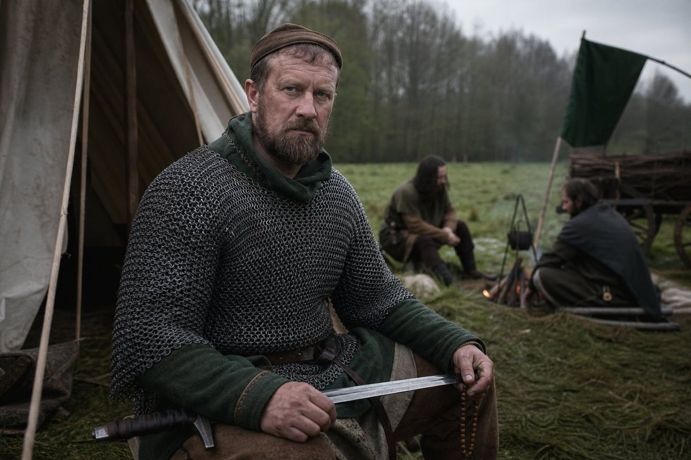
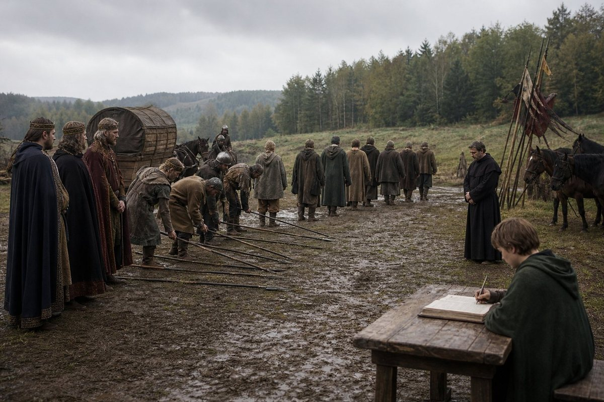
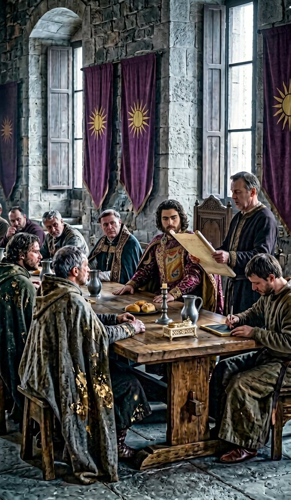
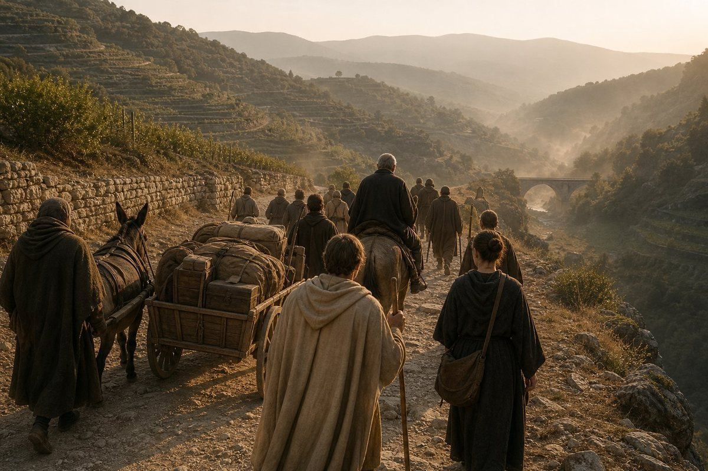
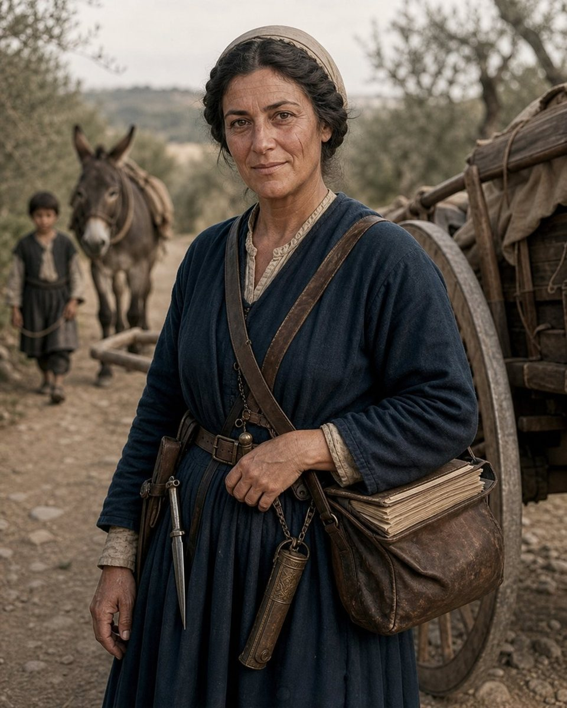
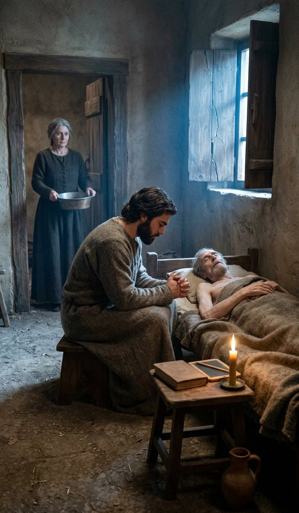
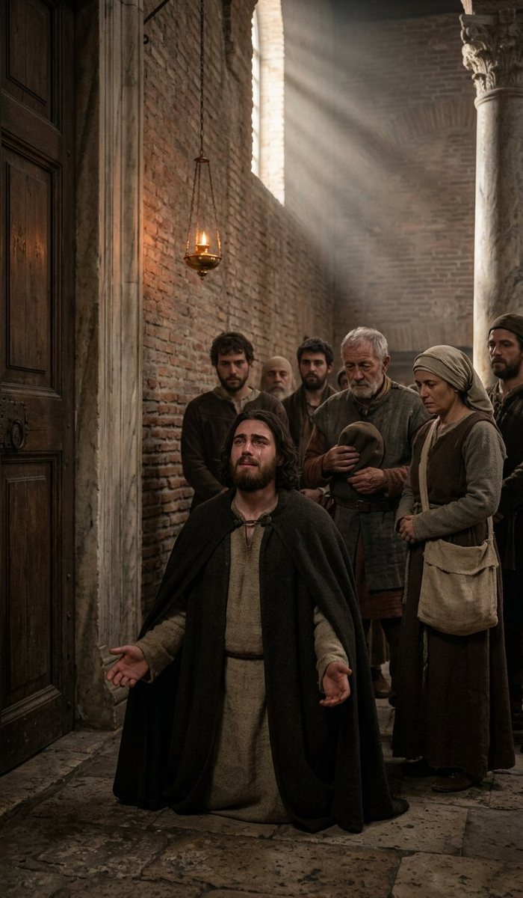
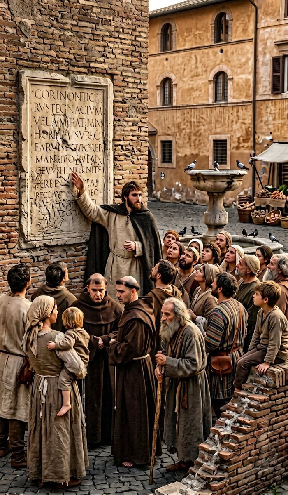
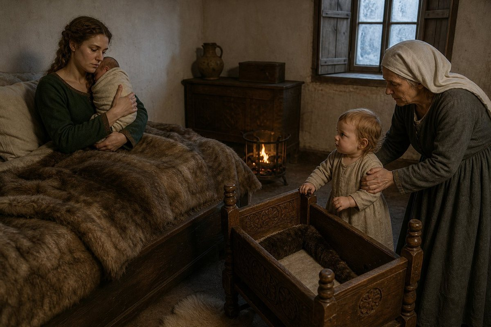

The homecoming
On the first day of the second month of 923 the King of Bavaria came back to Regensburg from Rome, and I am going to begin with the state of the realm he came back to, because a man who has been away for fifteen months should be made to look at what he left.
Eighty-eight counties. The same eighty-eight as the day his father died, and it is worth saying again at the start of this chapter, because this is the chapter in which the map finally moves.
A crown with four counties of its own. Six boys of his own blood in the others, two of them no longer answering to him directly since the fifteenth day of the eighth month of 922. Four lords who had refused an oath in the eleventh month of 920 and had never been made to give it. A church that had put an army into a field in 908 and again in 921 and had been beaten twice and had not changed its mind. A peasantry that had risen in the first month of 921 and been won in the fourth month of 922 and whose leader was, at the beginning of 923, alive, in a cell, and not in the record's mind at all.
And an army. This is the thing he had not seen with his own eyes, and I want to put it here because it is the arithmetic the rest of the year runs on. On the first day of the tenth month of 922, in a country he was not in, three corps of his own household troops went from eight regiments each to three. More than thirteen hundred men in a month, and no battle in it. I gave the reader the two readings of that in the last chapter and I am not going to give them again; what matters here is that the King of Bavaria came home in the second month of 923 to an army that was smaller than the one he had left and could not be told why in a sentence.
He was twenty. He had been away for fifteen months and had learned, by all accounts and by his own count, to read better than he could when he left. Whether that is what a kingdom of eighty-eight counties needed in the fifteenth month of a minority of its own making is not a question the record asks and it is not one I can answer, and I have put it at the front of this chapter because everything in the rest of it is the answer somebody gave.
The fourth day of the third month
On the fourth day of the third month of 923, a man called Pilgrim of the house of the Aribonen was slain in a duel.
The reader has met him. He is in the eighteenth chapter, in the paragraph where I said I had a great deal to say about him and would say almost none of it, and I have kept that promise for five chapters and I am going to break it here, because the man is dead and the promise was only ever about what I could prove.
The record's two words for him are Zealous and Religious Scholar. He became a rival of Edouinos Silviades on the twenty-fifth day of the fifth month of 907, the day the war with Ludwig de Montjoie was won, in the spring of the year in which the crown was six days old. He was a Bavarian of a great house, a scholar of the church, and he was against the whole of it: not the taxes, not the counties, not the man's cruelty, which was never the complaint — the rite. A Hellene on the throne of Bavaria, a Greek in the chapel at Regensburg, and the bishop of Rome silent about both.
I said in the eighteenth chapter that I would not accuse him of raising the rising of 908 and I do not accuse him now. What the record gives me is a man who was zealous, who was a scholar, who took against a king in the spring the crown was made, and who lived fifteen years and ten months after that taking against, in the country of the king he had taken against, unpunished and in his own house.
And on the fourth day of the third month of 923 he was killed in a duel, and the record does not give his killer, and I am not going to invent one. It does not give the cause of the quarrel, the place, the weapons, the seconds, or whether it was lawful. It gives a name, a date, and the words slain in a duel, and then it goes on to the next thing, which is a rising.
I have thought a great deal about that entry and I have four observations and I am going to write all four and mark them as mine.
The first is that a scholar of the church did not, in the ordinary way of things, end his life in a duel; and that a man who does is a man who has been living outside the protection of an institution for some years.
The second is that he was killed nineteen days before the third Chalcedonian rising in Bavaria, and I do not know whether that is a coincidence and I am not going to make it a cause. The record does not join them and I have spent four volumes not joining things the record does not join.
The third is that the crown of Bavaria had nothing to do with it, so far as the record shows. It was not an execution, and I want that said plainly, because the temptation with a dead enemy of a king is to make the king the author of it, and the king was twenty and had been home two months and this book has a rule about murder which it has kept for five volumes.
The fourth is that the old King's enemies are now dying in the ordinary ways of men, and that from this year forward the reader will notice that most of the people in this book who die, die of being old. Edouinos the Pilgrim is three years dead. His rival is killed in a field by a man whose name is not written down. In another seven years the whole of the company that came out of the north with him will be gone, and after that the only thing left of that generation in Bavaria will be a woman in a chair and a Greek with a ledger.
The twenty-eighth day of the third month
On the twenty-eighth day of the third month of 923 the Bavarian Chalcedonian Uprising began, under a man called Dietrich, and the rising was for Bohemia.
I am going to write the three of them out in a column, because this is the third time in fifteen years and the record has them as three separate entries and I have begun to think they are one thing.
In the ninth month of 908, in Bavaria, a rising of the Chalcedonian church under a woman called Heilwich, for Bavaria. Beaten. Heilwich is alive in 923 and is a populist leader and is fifty-two.
In the first month of 921, in Saxony, a rising of the Chalcedonian church under a man called Willichin, for Bohemia. Beaten in the sixth month, four lords taken alive on the day of it and not killed.
In the third month of 923, in Bavaria, a rising of the Chalcedonian church under a man called Dietrich, for Bohemia. Beaten in the fifth month.
Three risings, one church, two countries, one demand, fifteen years. And in all three of them the demand is Bohemia.
I have asked myself what that means and I have three answers and no way to choose between them, and I am going to give all three with the mark of the book on each.
What a Chalcedonian rising is
The first answer is the simple one and it is probably the true one: Bohemia is where the other church is. A rising of the Bavarian Chalcedonians that wants a bishop who will not be a Hellene's bishop can be given, as a bribe, a country where the rite is Chalcedonian already and where the crown's grip is thinnest — a country in the hills at the edge of the realm, taken from Great Moravia in 916, held at a distance, full of men who do not much care which king writes the letters as long as the letters are in Latin.
The second answer is that the risings are not about doctrine at all and never were. I have written in this book that a realm of eighty-eight counties with four nations in it and three rites in it is not a country, and that a crown which has been paying an army on time for a decade has been buying that army out of somebody. What the Chalcedonian risings offer a Bavarian lord is a reason. A reason to raise men, a reason to be owed something by the men he raised, a reason to be in a field in the spring with his own household around him and a bishop's blessing on it. Whether the rite in Regensburg is Greek or Latin does not change one acre of his land. It changes what he can say at the front of a column.
The third answer is the one that would have got me hanged in three countries and I will write it anyway, because I am sixty-five and I have been tolerated in eleven of them: the crown of Bavaria has been fighting this rising since 908 and has never once fought the thing that causes it. It fights the field. It wins the field. It takes four lords alive and does not kill them, and it leaves the church exactly where it was, with its grievance, its counties, its bishops and its memory, and it goes away and waits six or fifteen years for the next man with a good sword and a reason.
That is not weakness. It is the arithmetic of the realm on the page of the fifteenth day of the eighth month: eighty-eight counties, twenty-nine oaths, a crown with four counties of its own. A king who breaks a church in that kingdom does not have a church, he has a country in revolt in three directions at once, and the son of Edouinos Silviades has done exactly what his father did, which is to win the field and leave the grievance standing.
Dietrich
The record gives him a name, a country, a rite and a rising. It does not give his age, his house, his county, his grievance in his own words, or what became of him after the first day of the sixth month of 923, and I am not going to supply any of it.
That is the third man in fifteen years to lead this thing and the record has not described one of them. Heilwich has two words and is alive. Willichin has a name and nothing else in the world. Dietrich has a name and nothing else in the world.

What I can say is what a leader of this kind of rising is, and I mark it as the book's: he is not a peasant and he is not a bishop. He is a lord with a household, a following and a grievance that other men will follow him for, and he is the reason that a rising of the church is not a rising of the poor. The rising of the poor in this realm was in the first month of 921 and its leader is in a cell; the rising of the church was in 908 and 921 and 923 and its leaders are in a field with their own men around them and a blessing.
I have been in eleven countries and I have never once seen a rising of the poor and a rising of the church in the same year be the same rising, and I have seen kings survive the second and not the first, and the kings always know which is which.
The fifth day of the fifth month
On the fifth day of the fifth month of 923 the rising was won, and by the first day of the sixth month it was over.
The record gives no battle, no numbers, no dead, no prisoners, no terms and no execution. It gives a beginning, a winning and an end, and a month between the last two. Three risings in fifteen years and this book has numbers for none of them, and I want the reader to notice what I have not done, which is to fill it.
I could fill it. I have been in the field for the whole of my adult life and I know exactly what a rising in Bavaria looks like in the third month and what it looks like when it is beaten in the fifth: the mustering, the burnt grange, the two hundred men who go home when the harvest is near, the hedge where the last of them are caught, the lord brought in on a horse with his hands tied and the terms agreed in a tent in an hour. Every sentence of that would be mine and none of it would be the record's.
So: three dates and one adverb. Won. Over. Nothing else.
What I will put beside it is the arithmetic, because the arithmetic is the record's. On the sixth day of the fifth month, the day after the rising was won, the King of Bavaria declared war on the Kingdom of East Francia for the fourth time over the county of Hesse. On the twenty-seventh day of the same month, with the rising not yet formally over, he left for Rome.
Two days of that spring are the whole of this chapter: the fifth of the fifth month, on which he beat the third Chalcedonian rising of his house, and the sixth, on which he declared the fourth war for Hesse, and the twenty-second after that, on which he went south for nine months.

The sixth day of the fifth month
The fourth war for Hesse. I want that number unpacked, because Hesse is not a county in this book and the record is counting something I have never seen counted anywhere else: this is the fourth war the crown of Bavaria has fought over one county, and the record knows it and numbers it, and calls it the fourth.
The enemy is Karl of East Francia. He is the same Karl we fought in Thuringia in the fifth month of 919, the same Karl who inherited his father's holy war in 920 and lost it by holding, and he is now the man who is going to be on the other side of the border of this book for another nine years.
And the King of Bavaria declared war on him on the sixth day of the fifth month of 923 with an army that had lost fifteen regiments in a month the year before and had not been given a reason.
I have written this book for five volumes on the principle that a ledger is an honest instrument because it does not care what you want, and here is the ledger's page for that spring. A rising beaten on the fifth. A war declared on the sixth. A departure on the twenty-seventh, with the rising still being finished in the counties and the war four weeks old and not one battle in it. The King of Bavaria went to Rome for the third time in his life at the end of the third week of a war he had just begun.

I would like to insert a paragraph here about recklessness. I am not going to, and I will say why: because it is the same shape as 912 and it worked. The King's father went to Africa in the eleventh month of 912 with two wars running and the realm won one of them and annexed three counties while he was praying. In the nineteenth chapter I wrote that a kingdom of arrangements can be run from a bed. This is the same argument and I have made it before and the reader is entitled to be tired of it; the difference is that in 912 it was a machine built by Pramda that did it, and in 923 the machine is the one the custom made, with six boys in the counties and a church that has not changed its mind, and nobody has yet shown me that it works the same.
The twenty-seventh day of the fifth month
He left on the twenty-seventh day of the fifth month of 923 for the Vaticano, with the goal that the record calls Reflection, and he came home on the first day of the second month of 924. Two hundred and fifty days. He was out of his kingdom for eight months and five days of a war he had declared twenty-one days before he left it.
The record gives the road, which it did not do in 921, and I am going to give it because it is the only itinerary of its kind in five volumes: Rottenburg, Kufstein, Trento, Imola, Perugia, and Rome. He reached the city on the sixteenth day of the tenth month of 923.
Rottenburg first, which is one of the crown's own counties and where his brother Demetrios, who is five, has a county he has never seen. Kufstein, which is in the passes and which this book has used before. Trento, which is the door of Italy. Imola and Perugia, which are the road down the middle of that country. And Rome.
I have the road and I do not have one word about what happened on it, and the reader who has come this far knows that this book does not write the road out of its own head any more than it writes the battles. What I have instead is who went.

Stoyanka of Silistra
She went. The record notes a bond formed between the King and Stoyanka of Silistra over the journey to Rome in 923, and that is the whole of the entry and I am going to give the reader the woman, because I have known her for thirty years and she is in this book from the fourteenth chapter.
She was born at Silistra in the sixth month of 881. She came into the company at twelve years old, in the seventh month of 893, in Rome, at the school, when the Captain was studying Latin and had a Greek in the room and a Lombard poet in the next one; she came asking for the smith by name, and the company struck her on the roll in the eighth month of that year, and she is the youngest person on the roll in the whole of the record.
She is forty-two. She has been in the surgeons' tents at every field this book has, and she has done the counting at the next table while I did the sawing, and in the twenty-fifth chapter she came and sat down beside me in a yard on the worst day of my life and did not say anything.
And in the fifth month of 923, at forty-two, she went to Rome with a king of twenty-one and a dying man of sixty-one, and the record says the two of them formed a bond over the journey.
I am not going to write the bond. I do not know what it was and the record does not say, and a book that turned a bond into a scene would be a book about a different thing. What I will write is what a journey of two hundred and fifty days does between two people who are the only two people in the party who are not the King's household: they talk, and there is nothing else to do, and by the time they come to Perugia they have talked about everything either of them has ever done, which between those two is thirty years of eleven countries and the counting of the dead at Lengenfeld and the whole of the trade.
He was twenty-one. She was forty-two. The record has a word for it and the word is bond, and I am going to leave it there and let the reader make of it what he will, and I will add only this: that the two people in that party who came home from Rome in the second month of 924 were a young king with a reputation for witchcraft and mysticism, and a woman of Silistra who had been on a company's books since she was twelve, and that whatever a bond is, it was formed by two people who were both, in their different ways, entirely outside the thing they were travelling with.

The sixteenth day of the tenth month
They came into Rome on the sixteenth day of the tenth month of 923, and this was the third time the King of Bavaria had come into that city and the third time for me.
The first was in the twelfth month of 908, when he was six and I carried the ledger behind a king who was going to be made better at believing. The second was in the second month of 922, when he was nineteen and went on a roll of students and beat an abbot soundly in a disputation. The third is this one, and I am going to be honest about what it is: he came as a pilgrim. Not as a student, not as a king being kept at the gate and sold candles, but as one of a company of pilgrims with the goal the record calls Reflection, in the ninth month of a war he had declared in the spring.
Germano
On the twenty-fourth day of the tenth month of 923, eight days after they came into the city, Germano died of old age. He was sixty-one.
I have to write this properly and I have been putting it off for four pages, so I am going to start with the facts and then do the man.
He came into the company on the ninth day of the fourth month of 893: a Lombard of about twenty-six, at the school in Rome, with two years of it behind him and no money left, who came to the Captain's house with a poem he had written about the river and recited it standing up in the middle of the room. He was in Ugolino's class and he came into it drunk on the twenty-fifth day of the sixth month and was put out of it. He left the company at Regensburg on the first day of the sixth month of 907 with the eleven others and did not leave the city, and he was at Regensburg in the sixth month of 920, and he took a king of nineteen over the Alps in the winter of 921 and did the dull thing for four months and produced a clean account.
He had been excommunicated for years. That is the oldest joke in this company and it was old before I came into it: a Lombard poet who could not be buried in consecrated ground and who went to Rome twice as the man who arranged the bedding.
He died eight days after the King came into the city, in the week the King was at the Pope's door, and the record does not say where he died or of what beyond old age, and it does not say where he is buried, and I am not going to invent a grave.

What I will say is what he was, and I have the standing to say it because I have kept this ledger for four years and he is in the first chapter of my part of it.
He was the last of the scholars. The company of 879 came out of the north with swords and a chest, and it acquired, in Rome in 893, at the Captain's expense, a school: a Greek who wanted to read Latin manuscripts, a Lombard who had run out of money and written a poem about the river, and a boy from Silistra who came asking for the smith. Two of those three are dead and the third went to Rome in 923 with the King.
He was not a good soldier and it did not matter. He was a man who had been in a room in Rome in the sixth month of 893 with a wax tablet and a rolled manuscript and ink on his sleeves, and who ended as an old man of sixty-one on a pilgrim road in Italy, excommunicated, carrying a king's money and a list of places where a king could sleep, and producing a clean account.
There is no moral in it and I am not going to make one. I am going to put down the two dates, because the arithmetic is the only epitaph this book allows: he came into the company on the ninth day of the fourth month of 893 and he died on the twenty-fourth day of the tenth month of 923, and in the thirty years and six months between those two dates he was in ten countries, wrote a poem about a river that nobody has kept, and taught a king of Bavaria the second declension on a road in the Alps when the King was nineteen and asked him what he had got out of it.
The twenty-eighth day of the tenth month
Four days after Germano died, on the twenty-eighth day of the tenth month of 923, the King of Bavaria was overcome with religious emotion and fell into tears.
That is the record's entry and I have read it more often than any other line in this volume, because it is a sentence about a man's face written by a chancery, and because I was in the room.
I am a physician by trade and I have been in the business of other men's bodies for forty years, and I am going to say what a physician says about tears: they are not evidence of anything. Men weep at the wrong things and do not weep at the right ones, and the difference between a man who weeps in a church and a man who does not is not the difference between a believer and an unbeliever, it is the difference between a man whose body has decided to do it and a man whose body has not.
And having said that, I will say what I saw, and it is not the same thing. He was on his knees at the door of a church in Rome in the tenth month of 923, four days after the only man in his household who had been at a school with him in 893 had died in the same city, and he wept, and it went on long enough that the men around him did not know what to do, and I did the thing a physician does, which is nothing.

I have watched this man since he was sixteen and I have written him as quiet, just, compassionate, reckless, cold, and a man who does arithmetic. I have also written, twice, that a list of traits is not a character. Here is a page for the other side of the ledger: at twenty-one, in Rome, in the tenth month, having just declared a war and left it, having buried his father's scholar in a city where the man could not be buried in consecrated ground, he fell into tears at a church door in front of his own household.
Whether that is belief or grief or a young man's body doing something it had been holding off for eight months, I do not know, and the record calls it religious emotion, and I am not going to argue with the record about a man's own tears.
The monument
The record says that at Rome he translated a local monument for his fellow pilgrims. It says it in the flat way it says everything, and I want to put it beside the other one, because I was at both.
In the third month of 913, at Tunis, Edouinos Silviades translated a stone in a wall for a thousand pilgrims: letters in a tongue nobody in the party could read, cut twice, once by one people and once by another, and he stood in the dust and told them what it said and where the words had come from. I described it in the twenty-second chapter and I described it badly, because I did not understand at the time that it was the most kingly thing I ever watched him do.
His son did the same thing at Rome ten years later, for a party of pilgrims, in the tenth month of 923.

I am not going to write that as an inheritance, because this book does not do that and because the record does not. What I will write is the difference, and the difference is the audience. At Tunis in 913 there were a thousand people and most of them were not ours; the King of Bavaria stood in the dust in undyed wool and translated a stone for a crowd in Africa as a king. At Rome in 923 there was a party of pilgrims, and the man translating the stone was one of them, on foot, in the ninth month of a war, four days or a fortnight from his own tears, and the record keeps the act and not the words in both cases, and I have no way to tell the reader whether the son was better at it than the father.
I do know that the record gives him a word for it afterwards, and the word is not one the father ever had. It gives him Mystic. It also gives him Prolific Pilgrim, which the father had, and it takes away Wise Man, which the father had too, and I will come to the words at the end of the chapter because the words are the record's way of saying what a man has become when it has no events to give.
The fourteenth day of the eleventh month
On the fourteenth day of the eleventh month of 923, in Bavaria, Dusica bore the King a second child, a daughter, and the record gives the name: Philainis.
Nineteen months after Sophe. He was in Rome for both of them.
I wrote in the last chapter about the arithmetic of Sophe's birth, which fell on his own birthday, and I am not going to look for an arithmetic in this one, because there is not one and because a man who finds a pattern in two births is a man who is going to find one in three and then write a book about the stars.

What I will write is the plain thing, which the record makes plain by giving the date and the place and nothing else. The King of Bavaria has now had two children and has been out of his kingdom for the birth of both. He has been a father for nineteen months and has seen his daughter Sophe, at the most, for four of them. That is not a scandal and it is not a tragedy; it is what the arithmetic of this dynasty produces. His father was on the road for most of the years in which his own children were born, and I have written that in this book without comment, and the son is doing the same thing at twenty-one with the same absence and a different reason written in the record, and I do not know which of the two reasons is the true one.
The first day of the second month of 924
He came home on the first day of the second month of 924, and the record marks the return with four things about the man and no event at all: that he is now a Mystic, that he is a Prolific Pilgrim, that he has ceased to be a Wise Man, and that he is twenty-one years old.
I want to spend a page on the words, because a reader who has come five volumes with this ledger has a right to know what the chancery is doing.
The record keeps a list of words about a man and it changes the list. Sometimes it adds one and sometimes it takes one away. It has called the King of Bavaria Just, Compassionate, Stubborn, Reckless, a Witch, and a Wise Man. As of the first day of the second month of 924 he is not a Wise Man any more, and he is a Mystic, and he is a Prolific Pilgrim, and the last of those is his father's own word and I know exactly when his father got it, because I was on the ship.
What the words mean is a question for better men than me. What I can see is that they are not descriptions; no man is a Mystic in the way that a man is tall. They are the record's summary of what a man has done lately: a man who has been twice to Rome and wept at a church door in the tenth month is a Mystic, and a man who has been to Rome twice in three years with a party of pilgrims is a Prolific Pilgrim, and a man who has stopped being a Wise Man has stopped being the thing the word was made for in a school in the second month of 922.
That is the second thing in this chapter that I cannot make into arithmetic, and the first was the tears. A king of twenty-one who goes into a school and aces two assignments and beats an abbot soundly, and who comes out of three years of it no longer a Wise Man and now a Mystic, is a man in the hands of something that is not his own judgement, and I have watched enough men go into the church at his age to know what it is.
The twentieth day of the second month
On the twentieth day of the second month of 924, eighteen days after the King came home, Svetozár died in captivity.
The reader will remember the name, or he will not, and I am going to give it in full because this is the last entry in the book for the whole of the peasant war of 921. He rose in the first month of 921. He held the villages of Bavaria and the counties of the crown and the counties of children for fifteen months. The war was won in the fourth month of 922. He has been in a cell for twenty-two months, and on the twentieth day of the second month of 924 he died in it, and the record gives the date and the words in captivity and no cause and no place.
I want to put down what the crown of Bavaria does with a man like that, because it is the one thing in this book that has never changed from the first volume to the last. It imprisons and it does not execute. Four lords in 921, not killed. Willichin and Dietrich's men, so far as the record names any of them, not killed. It put a peasant leader in a cell in the fourth month of 922 and left him there, and he died there, and nobody wrote down of what.
I have been a soldier for forty years and I do not know which is worse and I am not going to pretend that I do. A man hanged in a yard is a thing a village can see and remember and hate properly. A man who is left in a cell until he dies is a thing that happens to nobody in particular, and the record writes it as one line among the counties.
That is the King's rule and it is his father's rule and it is the most merciful and the coldest thing in the constitution of this realm: he does not kill the men who come against him; he takes them out of the world quietly and keeps them, and in the end the world does it for him.
The year, and the four subjects
This is the fourth chapter of the fifth volume and it ends with the realm at eighty-eight counties and a war open, and I am going to do what I did at the end of the last one and take the four subjects in order.
The first was the old King's last years and his death. They are done, and this year took the last two of the things that belonged to them: the rival of 907, killed in a duel in the third month by a man whose name is not written down; and Germano, who was in the room in Rome in 893, dead in Rome in the tenth month at sixty-one, excommunicated, in the week the King was at the Pope's door. That is the whole of the old world that this chapter removes, and there are three left in it now who matter to this book: Prijezda the Pontifex, Slavac, and the man holding the pen.
The second was the rise of Antiphates. In this year he beat the third rising of his house, declared the fourth war for Hesse, and went to Rome for the third time in his life, and came home a Mystic and a Prolific Pilgrim and not a Wise Man. He is twenty-one. Every one of those is in the record and none of them is a rise in the sense that a reader of the first volume would have understood.
The third was the rebellion, and here is the thing about the third subject that I have only just understood, writing this page. The rebellion is not one thing and it will not be one chapter. It was two risings in four days in 921, and it was a rising of the church in 908 and in 921 and in 923, and it is the peasant war that ended in the fourth month of 922 with a leader who died in his cell in the second month of 924, and there will be more of it, because there has been more of it every fifteen years since this crown was made, and the King of Bavaria has now beaten it three times and has not once touched the thing that raises it.
The fourth was the precarious kingdom, and I am going to write the arithmetic of it exactly as the ledger has it on the first day of the third month of 924, and then I am done.
Eighty-eight counties. A crown with four of its own, and two of those given to a Norseman in 921. Six brothers in the counties, two of them under dukes now. An army smaller by fifteen regiments than the year before, with a war open in the west and a new one declared in the fifth month. A church with its grievance intact. A peasantry with its leader dead in a cell and no terms in the record. A treasury I cannot see, and a King of twenty-one who has gone to Rome twice in three years and come back each time with a word added to his list.
And none of it, not one county of it, lost.
That is the thing I have to write at the end of this chapter and I want it in the plainest words I have, because it is the argument of the whole of the fifth volume and the reader is entitled to it now rather than in the last chapter. This realm does not cohere. It is not a country and it will not be one. It is eighty-eight counties held by twenty-nine men of four nations and three rites, a crown with four counties, a church that says no, six children in the counties and a family in the middle of it. It should have come apart in 908 and in 921 and in 923, and it came apart a little in each of them — four lords unsworn, two boys put under dukes, fifteen regiments gone in a month — and it did not fall.
I have watched the son of Edouinos Silviades for three years now. He does not hold it together by being seen, the way his father did; he does not make a story out of it; he goes away, and it holds, and he comes back to a realm that has run without him and has run in a direction, and he looks at the ledger, and then he declares another war.
I do not know whether that is a method or a habit. I am sixty-five years old and I have a bad hand and this is the fourth chapter of a volume that has at least three more in it, and I am going to be dead before this question is answered, and I have decided to write down every number I can see and let the numbers answer it.
*Here ends the fourth chapter of the fifth volume, at Regensburg on the first day of the third month of the year of grace 924, in the hand of Laurentios of the company, born above the Gulf of Corinth in 858, who was at Rome in the twelfth month of 908 and the second month of 922 and the tenth month of 923, who buried a Lombard poet in a city that would not have him in consecrated ground, who watched a king of twenty-one weep at a church door and did nothing because that is what a physician does, and who has now written the whole of a year in which the King of Bavaria was out of his kingdom for eight months and five days and did not lose a county.*